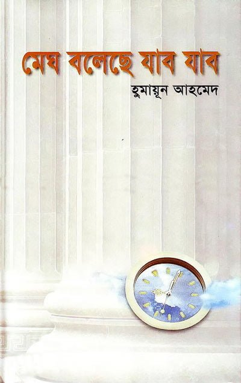
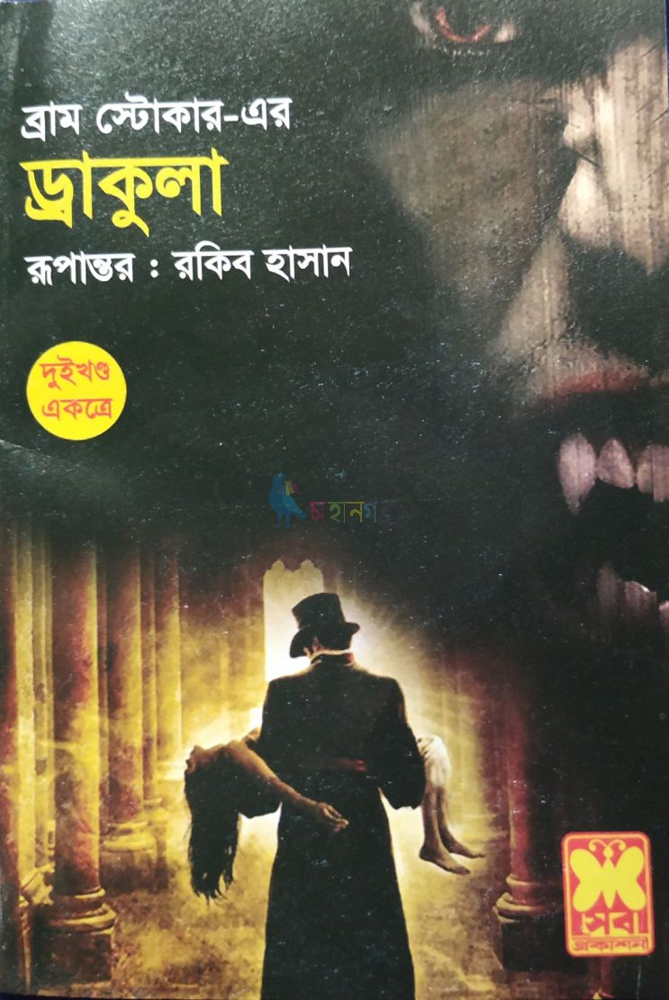
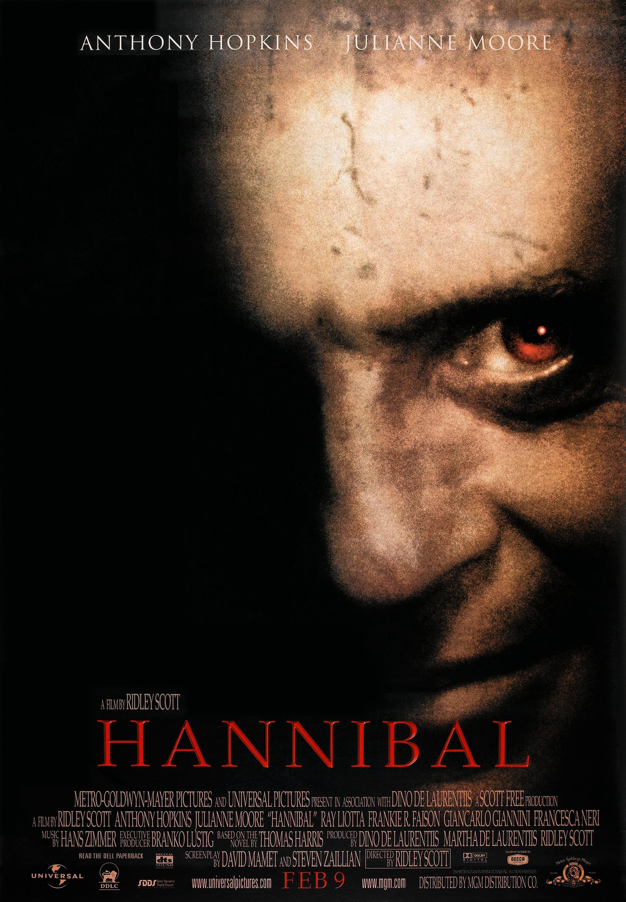
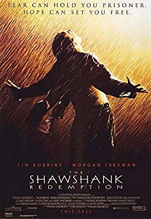
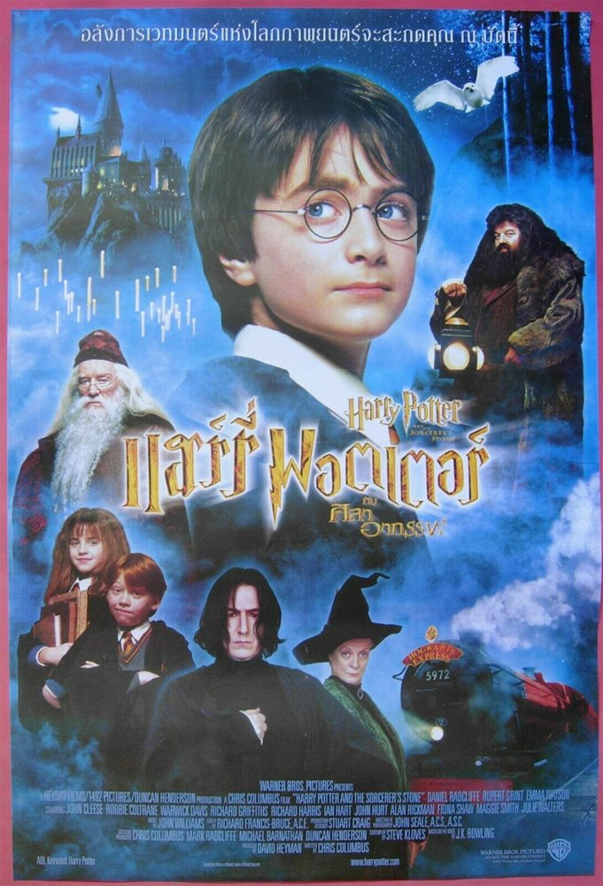
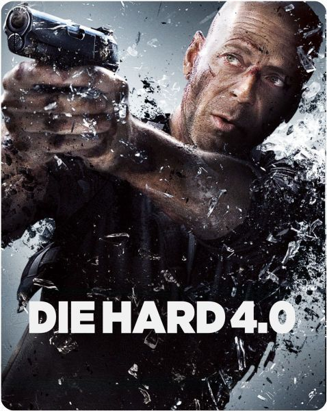
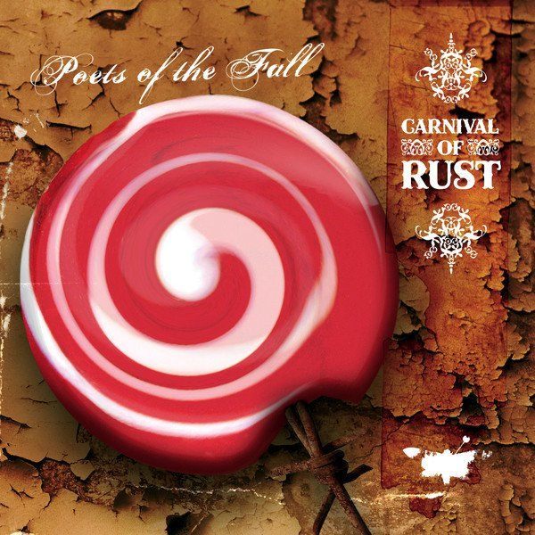

I've got numerous favourite books to put in the list. Just mentioning a few of them here.

A superb novel! I found the characters and story both too awesome. Dramatic turnings of life is depicted very beautifully in this book.
The philosophy expressed in this book touched me deeply when I read this book for first time.

Who hasn't heard of this famous horror novel by Bram Stoker? This is the first book I read which is written in epislotary format. I still remember the thrills I had while reading this book!
I just love this autobiographical book of Humayun Ahmed. How smoothly he potraited the events of his life!
Spy thriller, psychological thriller, crime and horror are my favourite movie genres.

“WITHOUT DEATH, WE’D BE AT A LOSS. IT’S THE PROSPECT OF DEATH THAT DRIVES US TO GREATNESS.” The character Hannibal Lecter and his dialogue give me chills to these days.

"Hope is a good thing, may be the best of the things. And good thing never dies." Yeah. I was just stunned after watching the whole movie.

A superb novel! The characters and story are both too awesome. Dramatic turnings of life is depicted very beautifully in this book.

A portion of the philosophy expressed in this book touched me deeply.
My favourite genres for movies are thriller (spy, psychological), crime and horror. I've chosen a few of them to put in the list below.
“WITHOUT DEATH, WE’D BE AT A LOSS. IT’S THE PROSPECT OF DEATH THAT DRIVES US TO GREATNESS.” The character Hannibal Lecter and his dialogue give me chills to these days.

"Hope is a good thing, may be the best of the things. And good thing never dies." Yeah. I was just stunned after watching the whole movie.